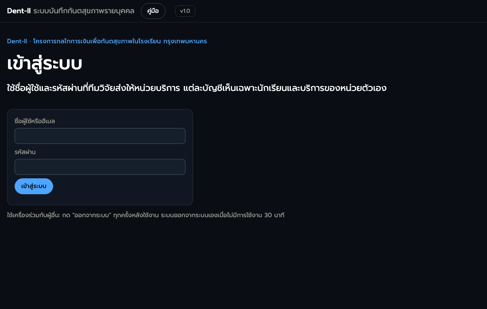
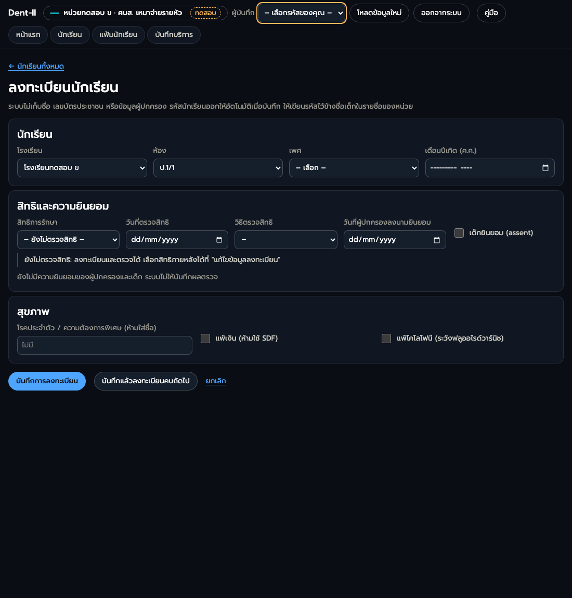
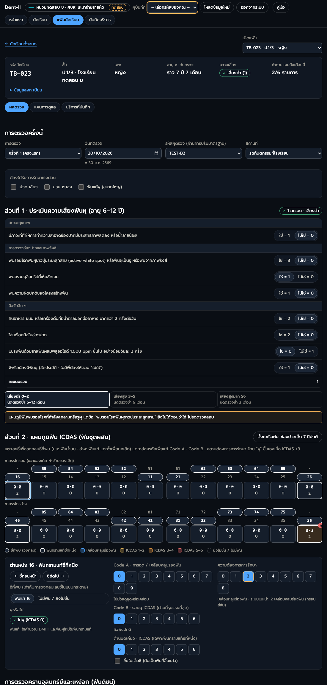
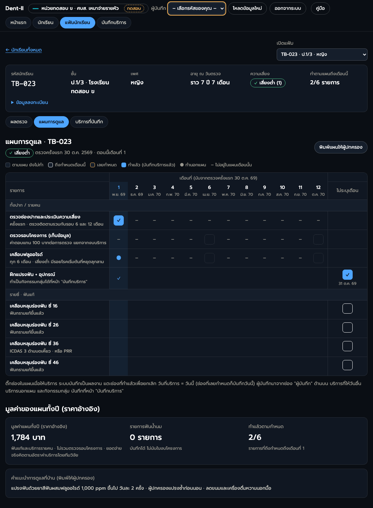
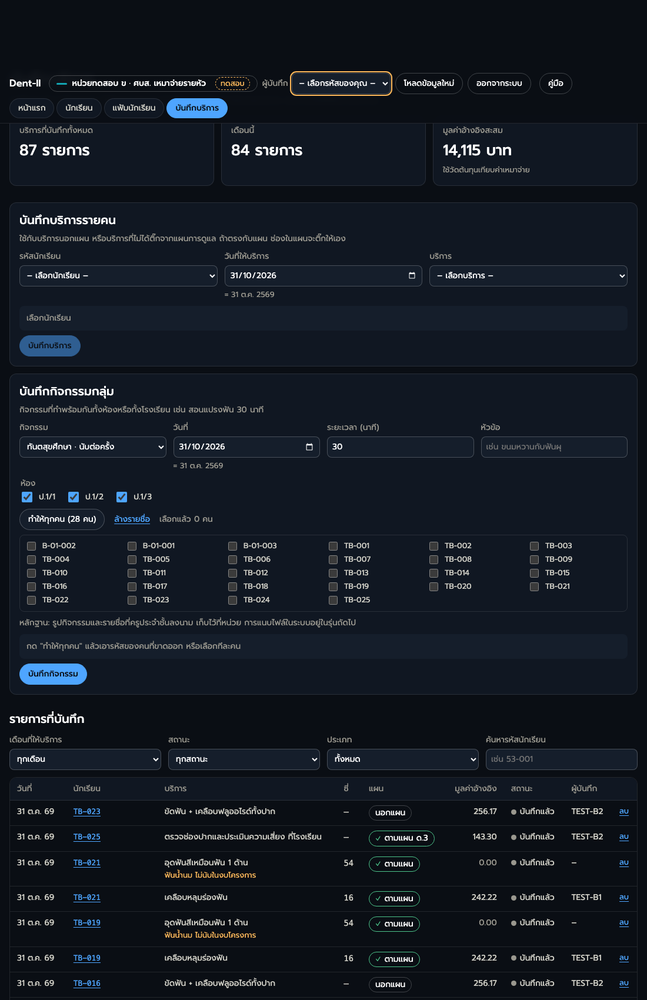

คู่มือระบบบันทึกทันตสุขภาพรายบุคคล Dent-II
สำหรับทันตแพทย์และทันตาภิบาลของหน่วยบริการในโครงการ · รุ่น 1.0 · พฤศจิกายน 2569
- เข้าระบบด้วยรหัสคลินิกของหน่วย แล้วเลือก "ผู้บันทึก" เป็นรหัสของตัวเอง
- ลงทะเบียนนักเรียน แล้วเขียนรหัสนักเรียนไว้ข้างชื่อเด็กในรายชื่อของหน่วย (ระบบไม่เก็บชื่อ)
- บันทึกผลตรวจครั้งแรก แล้วกด "บันทึกผลตรวจ"
- ทำตามแผนการดูแล ติ๊กช่องในแผนเมื่อให้บริการ
- บริการนอกแผนและกิจกรรมกลุ่ม บันทึกที่หน้า "บันทึกและเบิก"
- หน่วยที่เบิกตามรายการ ส่งเบิกเดือนละครั้ง
1. เข้าระบบและออกจากระบบ
- เปิดลิงก์ของระบบที่ทีมวิจัยส่งให้ ใช้ได้ทั้งคอมพิวเตอร์ แท็บเล็ต และโทรศัพท์ (ต้องต่ออินเทอร์เน็ต)
- ช่อง "ชื่อผู้ใช้" ใส่รหัสคลินิกของหน่วย เช่น 243 แล้วใส่รหัสผ่านที่ทีมวิจัยส่งให้
- หลังเข้าระบบ เลือกผู้บันทึกที่แถบด้านบนเป็นรหัสของตัวเอง (เช่น 654-1 หน่วยแจกรหัส 1–5 ให้เจ้าหน้าที่แต่ละคนและเก็บรายชื่อไว้เอง) ต้องเลือกก่อนบันทึกทุกครั้ง ทุกผลตรวจและทุกบริการจะบันทึกรหัสนี้ไว้แทนลายมือชื่อ เปลี่ยนคนใช้เครื่องเมื่อไรให้เปลี่ยนช่องนี้
- ใช้เสร็จกด ออกจากระบบ ทุกครั้ง ถ้าไม่ได้ใช้ 30 นาที ระบบออกให้เอง

2. ระบบไม่เก็บชื่อเด็ก: ใช้รหัสนักเรียน
ระบบนี้ไม่เก็บข้อมูลส่วนบุคคล: ไม่มีชื่อ ไม่มีเลขบัตรประชาชน ไม่มีข้อมูลผู้ปกครอง เก็บแค่เพศและเดือนปีเกิด
- เด็กแต่ละคนได้รหัสนักเรียนอัตโนมัติตอนลงทะเบียน เป็นเลข 2 หลักของหน่วยตามด้วยเลขลำดับ เช่น คลินิก 654 ได้ 54-001 54-002
- หน่วยเก็บรายชื่อของหน่วยเอง (กระดาษหรือไฟล์ในเครื่องของหน่วย) ที่มีชื่อเด็กคู่กับรหัสนักเรียน ใช้ค้นหาเด็กในระบบ
- ห้ามพิมพ์ชื่อเด็กลงในช่องใดของระบบ รวมถึงช่องโรคประจำตัวและช่องผลการส่งต่อ
3. ลงทะเบียนนักเรียน
- ไปที่แท็บ นักเรียน กด + ลงทะเบียนนักเรียน
- เลือกโรงเรียน ห้อง และเพศ ใส่เดือนปีเกิด (ปี ค.ศ.)
- สิทธิการรักษา: เลือก 1 ใน 3 แล้วใส่วันที่และวิธีตรวจสิทธิ
- UC (บัตรทอง): เบิก สปสช. ตามปกติ และเบิกโครงการตามอัตราค่าบริการของหน่วย
- สิทธิรัฐอื่น เช่น ข้าราชการ ประกันสังคม รัฐวิสาหกิจ อปท.: เบิกเหมือนเด็กสิทธิ UC
- ไม่มีสิทธิรัฐ เช่น เด็กต่างด้าวที่ไม่มีหลักประกันสุขภาพภาครัฐ: ไม่ต้องเบิก สปสช. โครงการจ่ายเต็มอัตราตามอัตราค่าบริการของหน่วย
- ความยินยอม: ใส่วันที่ผู้ปกครองลงนาม และติ๊ก "เด็กยินยอม" ถ้าไม่มีทั้งสองอย่าง ระบบจะไม่ให้บันทึกผลตรวจ
- โรคประจำตัวและการแพ้: แพ้เงินห้ามใช้ SDF แพ้โคโลโฟนีให้ระวังฟลูออไรด์วาร์นิช
- กด บันทึกการลงทะเบียน ระบบแสดงรหัสนักเรียนใหม่ เขียนรหัสนี้ลงในรายชื่อของหน่วยทันที

แก้ข้อมูลภายหลังได้ที่แฟ้มนักเรียน → ข้อมูลลงทะเบียน → แก้ไขข้อมูลลงทะเบียน
4. บันทึกผลตรวจครั้งแรก
ใช้แบบประเมินความเสี่ยงฟันผุและแผนภูมิฟัน ICDAS ชุดเดียวกับแบบฟอร์มกระดาษฉบับ final
- เปิดแฟ้มนักเรียน (แตะการ์ดของเด็ก หรือเลือกรหัสที่ "เปิดแฟ้ม") แท็บ ผลตรวจ กด เริ่มบันทึกผลตรวจครั้งแรก
- ตรวจวันที่ตรวจ รหัสผู้ตรวจ และสถานที่ รหัสผู้ตรวจตั้งต้นเป็นรหัสผู้บันทึก ถ้าทันตแพทย์ตรวจแต่ทันตาภิบาลเป็นคนบันทึก ให้เปลี่ยนรหัสผู้ตรวจเป็นของทันตแพทย์
- ติ๊กอาการเร่งด่วน (ปวด เสียว บวม หนอง ฟันแท้ผุใหญ่) ถ้ามี ระบบเพิ่มรายการส่งต่อในแผนให้
- ส่วนที่ 1 ความเสี่ยงฟันผุ: ตอบให้ครบ 8 ข้อ ระบบรวมคะแนนและบอกระดับความเสี่ยงให้
- ส่วนที่ 2 แผนภูมิฟัน: ระบบตั้งต้นเป็น "ช่องปากเด็ก 7 ปีปกติ" ให้แก้เฉพาะซี่ที่ต่าง
- แตะเลขซี่ (บน: ฟันน้ำนม ล่าง: ฟันแท้) เพื่อเลือกว่าพบซี่ไหน เหมือนการวงกลมในกระดาษ
- แตะกล่องรหัสของซี่ แล้วเลือก Code A (การอุด เคลือบ) Code B (ICDAS ด้านที่รุนแรงที่สุด) และความต้องการการรักษา
- ฟันกรามแท้ซี่ที่หนึ่ง (16 26 36 46) มีช่อง ICDAS ด้านบดเคี้ยว และช่อง "ขึ้นไม่เต็มซี่"
- ป้าย "ผุ" ขึ้นเองเมื่อ ICDAS ตั้งแต่ 3 ขึ้นไป
- ความต้องการการรักษาที่ระบบแนะนำมีกรอบสีส้ม ถ้าเลือกต่างจากที่แนะนำ ให้เลือกเหตุผลด้วย
- ใส่ PI และ GI ของฟันดัชนี 6 ซี่ให้ครบ ถ้าไม่ได้ตรวจครั้งนี้ ให้ติ๊ก "ไม่ได้ตรวจ PI/GI ครั้งนี้"
- กด บันทึกผลตรวจ ที่แถบด้านล่างของจอ ถ้ายังไม่กด ผลตรวจจะไม่ถูกเก็บ ถ้ายังกรอกไม่ครบ ระบบจะเลื่อนไปที่ช่องที่ขาดให้
- บันทึกผลตรวจครั้งแรกแล้ว ระบบบันทึกบริการ "ตรวจช่องปากและประเมินความเสี่ยง" (174) ให้อัตโนมัติ ไม่ต้องติ๊กเอง

เด็กขาดเรียนวันตรวจ: กด นักเรียนขาดเรียนวันตรวจ แล้วกลับมาบันทึกผลตรวจเก็บตกภายหลัง
5. แผนการดูแล
หลังบันทึกผลตรวจ ระบบสร้างแผนการดูแล 12 เดือนให้ตามระดับความเสี่ยงและผลตรวจรายซี่
| ในตาราง | ความหมาย |
|---|---|
| ช่องว่าง (กรอบ) | ตามแผน ยังไม่ทำ |
| กรอบเข้ม | ถึงกำหนดเดือนนี้ |
| ! กรอบส้ม | เลยกำหนด |
| ✓ สีฟ้า | ทำแล้ว (บันทึกบริการแล้ว) |
| ● | ทำนอกแผน |
| – | ไม่อยู่ในแผนเดือนนั้น |
- ให้บริการแล้ว แตะช่องของเดือนนั้น (หรือช่อง "ไม่ระบุเดือน" สำหรับรายการรายซี่) ระบบบันทึกบริการให้ทันทีด้วยวันที่วันนี้ ช่องที่เลยกำหนด (!) บันทึกเป็นวันที่วันนี้เช่นกัน และนับเป็นบริการของเดือนที่ค้าง
- แตะผิด แตะช่อง ✓ อีกครั้ง ระบบจะถามก่อนยกเลิก (ยกเลิกได้เฉพาะรายการที่ยังไม่ส่งเบิก)
- เด็กที่ยังไม่มีความยินยอมครบ หรือถอนตัวแล้ว ติ๊กแผนและบันทึกบริการไม่ได้
- ฟันน้ำนม: บันทึกได้ แต่ไม่นับในงบโครงการ
- พิมพ์แผนให้ผู้ปกครอง: กด "พิมพ์แผนให้ผู้ปกครอง" แล้วเขียนชื่อเด็กด้วยมือบนกระดาษ

6. บันทึกบริการนอกแผนและกิจกรรมกลุ่ม
แท็บ บันทึกและเบิก (หน่วยเหมาจ่ายรายหัวเห็นเป็น บันทึกบริการ)
บริการรายคน
- เลือกรหัสนักเรียน วันที่ บริการ และซี่ (ระบบแสดงเฉพาะซี่ที่เข้าเงื่อนไขของบริการนั้น)
- ช่องสรุปบอกว่าตรงกับแผนหรือนอกแผน ถ้าตรงกับแผน ช่องในแผนจะติ๊กให้เอง ถ้ามีเดือนก่อนหน้าที่ค้างอยู่ (!) บริการนี้จะปิดเดือนที่ค้างนั้นก่อน
- กด บันทึกบริการ
กิจกรรมกลุ่ม
- เลือกกิจกรรม: ทันตสุขศึกษา (นับต่อครั้ง) ฝึกแปรงฟัน + อุปกรณ์ หรือฝึกแปรงฟันรายบุคคล (นับต่อคน)
- เลือกห้อง กด ทำให้ทุกคน แล้วเอารหัสของเด็กที่ขาดออก (รายชื่อแสดงเฉพาะเด็กที่มีความยินยอมครบ)
- กด บันทึกกิจกรรม ช่อง "ฝึกแปรงฟัน" ในแผนของเด็กทุกคนที่เลือกจะติ๊กให้
- หลักฐาน: รูปกิจกรรมและรายชื่อที่ครูประจำชั้นลงนาม เก็บไว้ที่หน่วย

ระบบเตือนเมื่อบันทึกซ้ำเกินเงื่อนไข เช่น ฟลูออไรด์เกินเดือนละครั้ง เคลือบหลุมร่องฟันซ้ำซี่เดิม ชุดอุปกรณ์แปรงฟันเกินปีละครั้ง ข้อความเตือนขึ้นสีส้มใต้ชื่อบริการ รายการของเด็กที่ไม่มีสิทธิรัฐมีข้อความ "ไม่มีสิทธิรัฐ: ไม่เบิก สปสช. โครงการจ่ายเต็มอัตรา" และรายการของเด็กที่ยังไม่ได้เลือกสิทธิมีข้อความ "ยังไม่ระบุสิทธิการรักษา"
7. ส่งเบิก
- หน่วยเหมาจ่ายรายหัว: ไม่ต้องส่งเบิก ทุกบริการบันทึกเป็นผลงาน
- หน่วยงบรวมแบ่งปันส่วนประหยัด และกลุ่มควบคุม: ส่งเบิกเดือนละครั้ง ที่หน้า "บันทึกและเบิก" กด ส่งเบิกรายการที่ยังไม่ส่ง
| สถานะ | ความหมาย | หน่วยทำอะไร |
|---|---|---|
| ร่าง ยังไม่ส่ง | บันทึกแล้ว ยังไม่ส่ง | แก้หรือลบได้ ส่งเมื่อครบเดือน |
| รอตรวจ | ทีมวิจัยกำลังตรวจ | แก้หรือลบไม่ได้ |
| ส่งกลับแก้ไข | ทีมวิจัยส่งกลับพร้อมเหตุผล | อ่านเหตุผลใต้ชื่อบริการ แก้ข้อมูล แล้วกด "ส่งใหม่" |
| อนุมัติ รอโอน | ผ่านการตรวจ | รอโอน |
| โอนแล้ว | ทีมวิจัยโอนเงินแล้ว | – |
"มูลค่าอ้างอิง" ในระบบเป็นราคาจากการศึกษาต้นทุน ยอดที่จ่ายจริงคิดตามอัตราค่าบริการ (fee schedule) ของรูปแบบการจ่ายของหน่วย
8. การส่งต่อ
- เด็กที่ต้องส่งต่อมีรายการ "ส่งต่อ" ในแผน แตะช่องนั้นเมื่อส่งต่อแล้ว
- ได้ผลการรักษาแล้ว ไปที่แฟ้มนักเรียน แท็บ บริการที่บันทึก กด บันทึกผล ที่แถวส่งต่อ (ห้ามใส่ชื่อ)
- การรักษาที่ส่งต่อเบิกตามระบบปกติ ไม่อยู่ในงบโครงการ
9. ดาวน์โหลดข้อมูล
หน้าแรก → ดาวน์โหลดข้อมูลของหน่วย ได้ไฟล์ CSV เปิดด้วย Excel: ผลตรวจรายคน ผลตรวจรายซี่ และบริการที่บันทึก ทุกไฟล์ใช้รหัสนักเรียน ไม่มีชื่อ
10. ปัญหาที่พบบ่อย
| อาการ | ทำอย่างไร |
|---|---|
| เข้าระบบไม่ได้ | ตรวจชื่อผู้ใช้ (รหัสคลินิก) และรหัสผ่าน ถ้ายังไม่ได้ ติดต่อทีมวิจัย |
| กดบันทึกผลตรวจไม่ได้ | ตอบแบบประเมินความเสี่ยงให้ครบ 8 ข้อ เลือกรหัสผู้ตรวจและผู้บันทึก กรอก PI/GI หรือติ๊กว่าไม่ได้ตรวจ และตรวจว่ามีความยินยอมครบ |
| "เชื่อมต่ออินเทอร์เน็ตไม่ได้" | ข้อมูลยังไม่ถูกบันทึก ต่ออินเทอร์เน็ตแล้วกดบันทึกอีกครั้ง อย่าปิดหน้าจอก่อน |
| ติ๊กแผนไม่ได้ | มีผลตรวจที่ยังไม่บันทึก กด "บันทึกผลตรวจ" ก่อน |
| ลงทะเบียนเด็กซ้ำ | แจ้งทีมวิจัยพร้อมรหัสนักเรียนที่ซ้ำ ห้ามลบเอง |
| หารหัสนักเรียนไม่เจอ | ดูรายชื่อของหน่วย แล้วพิมพ์รหัสในช่องค้นหาที่หน้า "นักเรียน" |
ติดต่อทีมวิจัย Dent-II ตามช่องทางที่แจ้งในกลุ่มของโครงการ